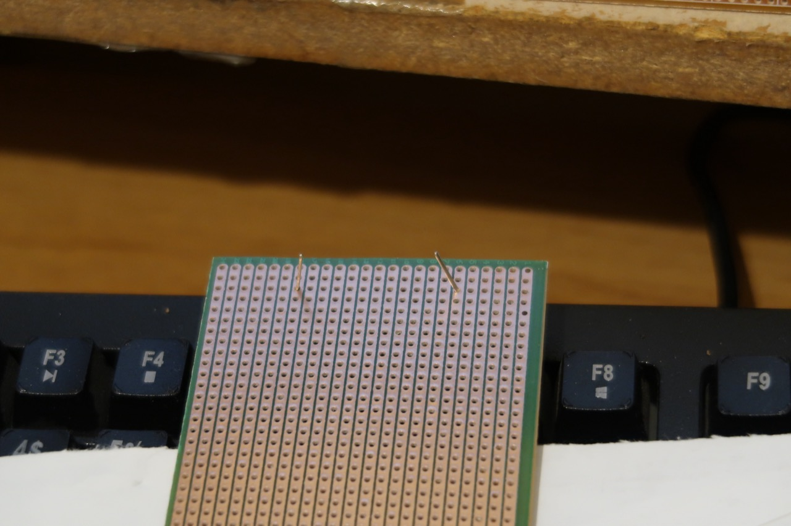
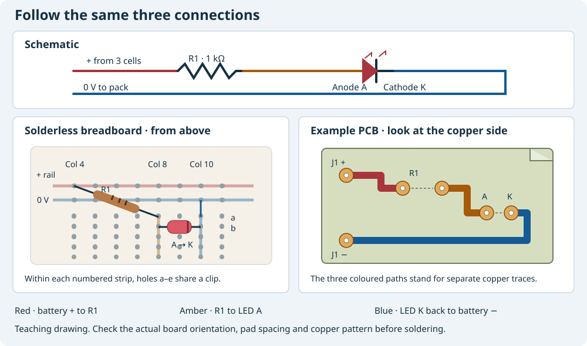
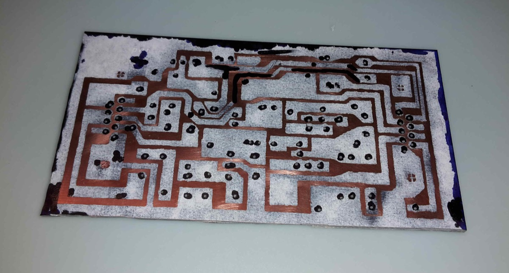
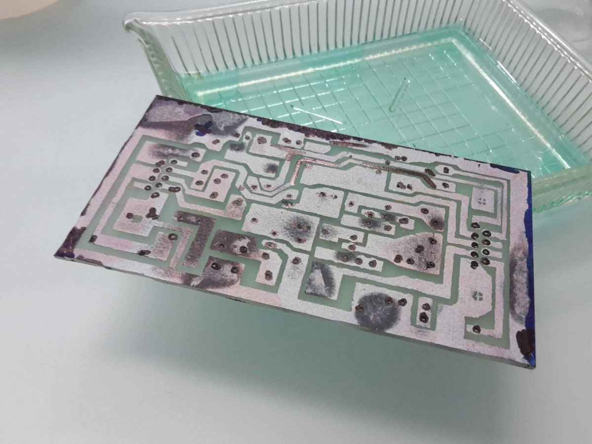

PCB basics from breadboard to copper traces
Wire a battery, resistor and LED on a breadboard. Then follow those same three connections as copper traces on a simple printed circuit board.
Start with one working circuit

Photo by Zeroping. Original photo · CC BY 4.0.



Photo by Morahman7vn, resized. Original photo · CC BY-SA 4.0.

Watch the conductors. Find the hidden metal clips in the breadboard video. In the factory video, watch a continuous copper surface become separate paths. Moritz Klein · Beginner's guide to breadboards · Eurocircuits · Etching the outer layers.
Disconnect the three-cell battery holder. In continuity mode, compare holes a8 and b8, then a8 and a9. The first pair shares a spring clip and should beep. The second pair uses separate clips and should stay open. Check your power rails for a break and stay on the section that carries the battery connection. Adafruit · The clips inside a breadboard.
- Put a 1 kΩ resistor between the positive rail at column 4 and a8. Put the red LED's anode in b8 and cathode in b10. Use a jumper from a10 to the negative rail. The cathode usually has a shorter lead and a flat rim on its body.
- Connect the 4.5 V battery holder. With the meter in DC volts and the black probe on battery negative, check the positive rail near 4.5 V, the LED anode roughly 1.6–2.2 V and the LED cathode near 0 V.
- Measure directly across the resistor. For example, 2.6 V across 1 kΩ means about 2.6 mA through the LED. Keep that reading for the PCB comparison.


What the board is made of


Photo by Tinux, resized. Original photo · CC0.



Photo by Tinux, resized. Original photo · CC0.

- Laminate
- The stiff, insulating board underneath the copper. A common type, FR-4, uses glass fabric and epoxy.
- Copper foil and traces
- Foil starts as a continuous layer bonded to the laminate. Etching removes unwanted copper. The remaining copper forms traces, pads and sometimes large areas called planes. A common starting foil is about 35 µm thick.
- Pad, hole and via
- A pad is a copper landing for solder. A through-hole lead passes through a drilled hole. A plated hole has a conductive wall. A via uses such a wall to join copper on different layers.
- Solder mask and pad finish
- The mask is the protective coating, often green. Openings give access to pads, which commonly have a solderable surface finish. Bare copper, masked copper and finished pads can look different while sharing a connection.
- Silkscreen
- Printed ink shows part labels, outlines and polarity marks. Use the legend to place parts and the copper or meter to tell what is connected.
A single-sided board puts copper on one face. A two-layer board adds copper to the other face. Multilayer boards can route connections inside the laminate. SparkFun · Photographs of PCB materials · Eurocircuits · How a PCB is made.
Move the same circuit to a solderable board
Use a solderable breadboard with groups of five pads, such as the BusBoard SB400. A regular stripboard has longer copper strips and needs its own layout. Mark a reference corner before you turn the board over. The solder-side view reverses left and right if you turn it over around a vertical edge. BusBoard · SB400 specifications · Mouser India · Find the SB400.
View the copper side View the component side View soldering at a pad


SB400 photos · BusBoard Prototype Systems · Soldering photo · Bill Earl and Adafruit, CC BY-SA 3.0.
- On the empty board, use continuity to find two separate rails and two isolated five-pad groups. Label the groups 8 and 10. Two ends of one copper strip should read approximately the resistance of your shorted probes. The two rails should read open.
- Remove the battery cells. Place the resistor between + and group 8. Put the LED anode in group 8 and its cathode in group 10. Add a jumper from group 10 to −. Solder from the copper side and connect the battery leads last. P05 · Soldering your first joint.
- Check the resistor leg in group 8 to the LED anode lead, and the LED cathode lead to the battery return. Probe the leads away from the solder blobs. If battery + to − reads near zero, find the short before connecting cells.
- Power the board and repeat the three voltage readings. With the same cells and parts, the result should match the breadboard closely. If the LED stays dark, find the first node with an unexpected reading.
Solder wets a joint when it flows onto the lead and pad. A large copper area can draw heat away from the iron. Excess heat can lift a pad. Handle boards by their edges and add an ESD bench setup as you reach sensitive devices. Adafruit · Solder joint photographs · EOS/ESD Association · Safe bench handling.
Keep building
P182 · Add diodes, a capacitor and a transistor on breadboard P48 · Lay out the LED circuit as a custom PCB in KiCad P26 · Practise surface-mount joints after the through-hole buildFor later work on assembled boards
Wetting and heat transfer
Flux removes or disrupts oxides so solder can wet the metals. A thin intermetallic layer forms at the interface. Tip contact area, a thin solder film and the copper's thermal mass affect heating. Under magnification, check both ends of a joint for wetting, alignment, bridges and lifted pads. Compare continuity between the terminal and an independent point on the same net.
Static discharge and protection
A fast discharge can damage gate oxide even when you feel nothing. On an unpowered bench, a dissipative mat, grounded wrist strap at the designated common point and ESD-safe packaging reduce voltage differences. A TVS diode or array near a connector diverts transients. Check pinout, directionality, standoff voltage and capacitance before replacing it. EOS/ESD Association · Workstation guidance.
Recognise the connector before moving it
Look up the connector before using a tool. A zero-insertion-force ribbon socket releases a latch before the cable slides out. A press connector lifts vertically at its specified edge. A sliding plug releases in the direction given by its service guide. Pull on the housing and protect the copper pads beneath the socket. iFixit · Connector types and release directions · P34 · Photographed connector practice.